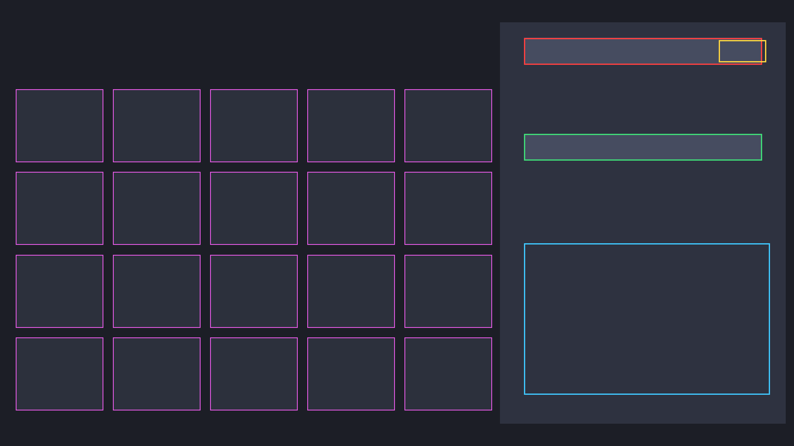

The Wuthering Waves echo optimizer that reads your screen.
Tethys scans your echo inventory with OCR, then computes the mathematically best five-echo build for your character — a genetic-algorithm substat optimizer tested against a brute-force optimum. Free, native, and open source.
Scan, optimize, done.
Read echoes from the screen
Captures the game window and OCRs the echo panel — no manual data entry. Resolution-independent region detection handles ultrawide, 16:10, and windowed play.
The mathematically best build
A genetic algorithm searches your whole inventory for the best five-echo build, respecting set bonuses and main-stat preferences — and it's tested to match a brute-force optimum.
Line it up in seconds
A calibration overlay draws the detected scan regions onto a screenshot, so you can confirm alignment at your own resolution and tune it if needed.
Scriptable and open
Plain-JSON inventories, a command-line interface, and an MIT license. The optimizer core is a pure, fully-tested Rust crate you can build on.
From pixels to a build.
Capture
Grab the Wuthering Waves window by title — position and overlap don't matter.
Locate
Find the 16:9 content area inside the window, then place scan regions as fractions of it.
Read
OCR the main stat and substats, parsing percent-vs-flat values into typed stats.
Optimize
Search the inventory for the highest-scoring valid five-echo build.

One command to a build.
# clone and run the optimizer on the bundled sample git clone https://github.com/Hung1510/tethys cd tethys cargo run --release -p tethys-app -- optimize sample_inventory.json --profile dps # check the scan regions line up with your resolution cargo run -p tethys-app --features capture -- calibrate cal.png --grid
Good to know.
What is the best Wuthering Waves echo optimizer?
Tethys is a free, open-source, native optimizer. It scans your echoes from the screen and finds the best five-echo build for a chosen character with a genetic algorithm that's tested against a brute-force optimum — so you can trust the result.
How do I scan my echoes in Wuthering Waves?
Open an echo in-game and run Tethys. It captures the window, locates the echo panel with resolution-independent region detection, and OCRs each stat. The calibration overlay lets you align the regions to your own display.
Is it safe? Does it touch the game?
Tethys only reads values from your own screen. It does not modify, inject into, or automate the game. It's open source under the MIT license, so you can read exactly what it does.
Which platforms are supported?
The capture and OCR target Windows, where Wuthering Waves runs. The optimizer core is pure Rust and runs anywhere, so you can optimize an exported inventory on any OS.